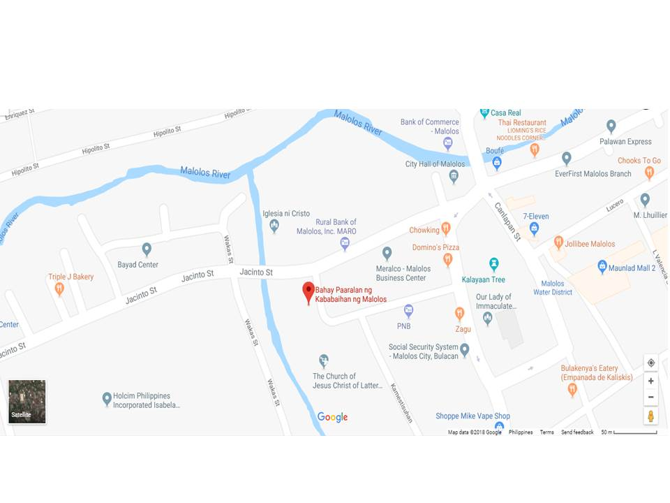
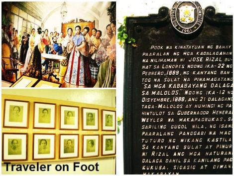

How to get there?
 
You need to ride a jeepney with a signboard,"Malolos Bayan" and alight in the right terminal of Bayan, ride a tricycle, go across Estrella St. and turn left and you'll see the intersection of another street and go straight and another left and you will see the Instituto Mujeres between 2 churches